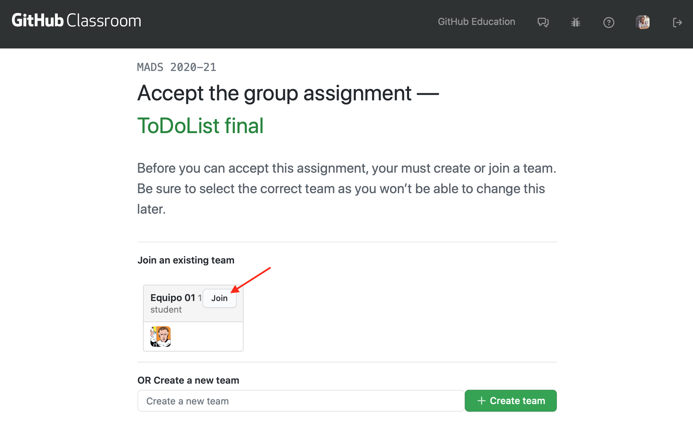

Práctica 3: Trabajo en equipo con GitFlow y despliegue de la aplicación¶
Objetivos y resumen de la práctica¶
En esta práctica se pretende conseguir:
- Crear los equipos de trabajo en GitHub.
- Adaptar el flujo de trabajo en Git y GitHub al trabajo en equipo.
- Implementar GitFlow.
- Desarrollar nuevas features con GitFlow.
- Lanzamiento de una versión nueva usando GitFlow.
- Despliegue en producción de la aplicación, construyendo una imagen
docker y lanzándola junto con la base de datos con
docker compose.
Formación de equipos¶
En esta práctica comenzamos a trabajar en equipos de 3 personas (de forma excepcional podrían ser 2 o 4 personas).
Cada equipo trabajará con un repositorio común seleccionado de uno de
los miembros del equipo. Se formará también un team en la
organización mads-ua en el que participarán todos los miembros
del equipo.

Utilizaremos GitHub Classroom para crear el team y el repositorio.
Roles en el equipo¶
Cada una de las tres personas del equipo tendrá un papel diferente.
- Responsable de GitHub: encargado de gestionar el flujo de Git y de supervisar los pull requests, issues y tablero de GitHub.
- Resposable de integración continua (devop): encargado de gestionar Travis, Docker y configuraciones del proyecto.
- Responsable del producto: encargado de conocer y gestionar las historias de usuario, el tablero Trello y las pruebas de usuario del producto.
Debéis elegir quién va a tener cada papel.
Pasos a seguir¶
-
Debéis formar equipos de 3 personas. Enviad los componentes al foro de Moodle y os asignaré un nombre de equipo. Utilizad después el enlace de GitHub Classroom que enviaré al foro de Moodle para crear el equipo y apuntaros a él.
El primero que use el enlace debe crear el repositorio, escribiendo el nombre del equipo, como se muestra en la siguiente imagen.

El equipo trabajará con un repositorio creado por GitHub Classroom con el nombre
todolistgrupo-2019-NOMBRE-EQUIPO. Al igual que en la práctica 1, el repositorio se creará en el grupomads-ua.
Una vez que la primera persona ha creado el equipo y el repositorio, las siguientes personas que usan el enlace pueden unirse al equipo creado o crear un nuevo equipo:

-
Una vez creado el repositorio debéis crear en él un tablero para gestionar las tarjetas con los issues y los pull requests. Creadlos con las mismas columnas que en las prácticas 1 y 2.
-
Escoged el proyecto que vais a usar como punto de partida de estas dos últimas prácticas de entre los proyectos de los miembros del equipo. Intentad que se un proyecto con código limpio y fácilmente ampliable.
Subidlo al nuevo repositorio, cambiando la URL del
origindel repositorio local y haciendo un push:1 2
$ git remote set-url origin https://github.com/mads-ua/todolistgrupo-2019-NOMBRE-EQUIPO.git $ git push -u origin masterPor último, los otros miembros del equipo deberán clonar el repositorio para que los tres podáis trabajar con él en local.
-
Cambiad el nombre del proyecto (en el fichero
POM.xmly en elabout.htmlamads-todolist-equipo-XX.Haced un commit directamente en
mastercon estos cambios.Para conectar el repositorio con Travis el responsable de integración continua debe acceder a su cuenta personal en Travis.com y sincronizar el nuevo repositorio
todolistgrupoen la organizaciónmads-ua. Puedes acceder a la página para sincronizar este nuevo repositorio desde la página principal de Travis, pulsando el botón+:
Nuevo flujo de trabajo para los issues¶
Debemos adaptar el flujo de trabajo en GitHub al trabajo en equipo. En cuanto a la gestión de los issues y tablero del proyecto cambiaremos lo siguiente:
- Selección del issue: Al pasar un issue de
To doaIn progressse debe asignar un responsable del desarrollo del issue. - Nueva rama con el issue: El responsable seleccionado será el que abra una rama nueva para el desarrollo del ticket y la subirá a GitHub.
- Desarrollo: Se trabaja en la rama. Cualquier compañero puede unirse al ticket y trabajar junto con el responsable, trabajando sobre la rama.
- Pull request: Cuando el ticket se ha terminado, el responsable
abre un pull request en GitHub y pone la tarjeta en la columna
In pull request. Se archiva la tarjeta del issue. - Revisión de código: Los miembros del equipo revisan el código en el pull request (consultar documentación en GitHub: Reviewing proposed changes in a pull request). Al menos uno de los miembros del equipo deben dar el OK, añadiendo una reacción.
- Integración del pull request: Cuando un miembro da el OK, el responsable de la tarea integra el pull request.
Para implementar el trabajo en equipo será necesario trabajar sobre ramas remotas compartidas. A continuación explicamos con más detalle algunos aspectos comandos de Git necesarios.
Comandos Git¶
Veamos algunos comandos de Git relacionados con el trabajo compartido en repositorios y ramas remotas.
-
Subir una rama al repositorio remoto:
1 2
$ git checkout -b nueva-rama $ git push -u origin nueva-rama -
Descargar una rama del repositorio remoto:
1 2
$ git fetch $ git checkout nueva-ramaEl comando
git fetchse descarga todos los cambios pero no los mezcla con las ramas locales. Los deja en ramas remote tracking a las que les da el nombre del servidor y la rama (origin/nueva-rama).En el caso del comando anterior, el comando
git checkout nueva-ramaes equivalente agit checkout -b nueva-rama origin/nueva-rama. Se crea una rama localnueva-ramaconectada a la ramaorigin/nueva-rama. -
Actualizar una rama con cambios que otros compañeros han subido al repositorio remoto:
1
$ git pullEl comando
git pulles equivalente a ungit fetchseguido de ungit merge. El comandogit fetchactualiza la rama remotaorigin/nueva-rama. El comandogit pulles equivalente a hacer:1 2 3
$ git checkout nueva-rama $ git fetch $ git merge origin/nueva-rama -
Subir cambios de la rama actual:
1 2
(estando en la rama que queremos subir) $ git pushEl comando
git pushfuncionará correctamente sin más parámetros si previamente hemos subido la rama con ungit push -u. -
Comprobar el estado de las ramas locales y remotas:
1
$ git branch -vvEste comando no accede directamente al servidor, sino que muestra la información de la última vez que se accedió a él. Si queremos la información actualizada podemos hacer un
git fetch --allantes:1 2
$ git fetch --all $ git branch -vvEs importante recordar que
git fetch(a diferencia degit pull) no modifica los repositorios locales, sino que baja las ramas remotas cachés locales. -
Información de los repositorios remotos:
1
$ git remote show originProporciona información del repositorio remoto, todas sus ramas, del local y de la conexión entre ambos.
1
$ git remote -v updateProporciona información del estado de las ramas remotas y locales (si están actualizadas o hay cambios en algunas no bajadas o subidas).
-
Borrado de ramas remotas desde el terminar:
1 2
$ git push origin --delete nueva-rama $ git remote prune origin -
Si necesitamos en la rama de feature código que se haya añadido en la rama
master.Podemos hacer un merge de la rama
masteren la rama de feature para incorporar los avances de código que se han hecho enmastery que necesitamos en nuestra nueva rama:1 2
$ git checkout nueva-rama $ git merge master -
Solución de conflictos en un pull request:
Recordamos lo que hemos visto en teoría sobre la solución de conflictos detectados en un pull request.
Supongamos que hay un conflicto entre la nueva rama y
master. GitHub detectará el conflicto en la página de pull request. Para arreglar el conflicto:1 2 3 4 5 6 7
$ git checkout master $ git pull $ git checkout nueva-rama $ git merge master # arreglar el conflicto $ git push # ya se puede hacer el merge en GitHub
Pasos a seguir¶
-
Probad el nuevo flujo de trabajo en el tablero del proyecto creando un nuevo issue denominado
Actualizar la página Acerca de. En la descripción de issue comentad que se debe modificar la página para que muestren todos los miembros del equipo y el nuevo número de versión de la aplicación (1.3.0-SNAPSHOT). -
Escoged una persona del equipo como responsable del issue. El responsable del issue será el responsable de integrarlo en
mastery de solucionar los conflictos que puedan surgir. -
Probad los comandos Git anteriores en una rama en la que se resuelva el issue. Cada miembro del equipo deberá realizar un commit en el que se añada su nombre a la lista de autores de la aplicación, indicando también su papel en el equipo.
-
Cread el pull request en GitHub, poniendo como responsable del PR al mismo responsable del issue.
-
Provocad un conflicto y arregladlo. Para ello se debe añadir un commit en
masterque entre en conflicto con los cambios realizados en la rama. Después se arreglará el conflicto y se subirá la solución al pull request. -
Por último, revisad el código, aceptadlo e integrad el PR en master.
Configuración de GitFlow¶
El flujo de trabajo Git que vamos a seguir es muy similar al flujo de trabajo GitFlow (recordad la clase de teoría).
Ramas de largo recorrido¶
En GitFlow se publican las distintas versiones del proyecto en la rama
long-lived master y se hace el desarrollo en la rama
develop. A partir de ahora no desarrollaremos directamente en
master sino en develop.
En la página de configuración del repositorio en GitHub en Settings >
Branches > Default branch se puede configurar la rama por defecto
contra la que se realizarán los commits y la que aparecerá en la
página del proyecto. Tendréis que definir develop.
Ramas de feature¶
Desde el comienzo de trabajo con Git en las prácticas 1 y 2 estamos haciendo un desarrollo basado en ramas de corto recorrido, equivalentes a las ramas de features de GitFlow.
Tal y como se comenta en GitFLow estas ramas saldrán de develop y se
integrarán en develop. La diferencia es que en GitFlow estas ramas
se integran con la rama de desarrollo manualmente haciendo merge,
mientras que nosotros las integramos haciendo un pull request.
Ramas de release¶
Hasta ahora hemos hecho los releases en la rama master. A partir
de ahora seguiremos la estrategia de GitFlow y haremos ramas de
release que salen de develop y se integran en master y en
develop.
Haremos también la integración haciendo pull request.
Pasos a seguir¶
-
El responsable de GitHub se debe encargar de crear la rama
developy configurarla como rama principal del proyecto en GitHub. Todos los otros miembros deberán descargarla y moverse a ella en sus repositorios locales. Esta rama pasará a ser la de desarrollo principal. -
El responsable de integración continua modificará el fichero de configuración de Travis, para que también se lancen los builds en la rama
develop(además de en la ramamaster). -
Haced un PR de prueba en la rama
developpara comprobar que todo funciona bien. -
Cread tres issues distintos, simulando tres nuevas funcionalidades. Deben ser issues muy sencillos (cambiar el color de algún elemento de la aplicación, cambiar un texto, o algo similar). Cada uno de los miembros del equipo será el responsable de uno de los issues.
-
El responsable de GitHub configurará el repositorio para obligar a que cualquier pull request tenga que tener la revisión de una persona distinta del responsable del PR.
Desarrollar e integrar los issues en develop siguiendo el flujo de
trabajo planteado anteriormente. El responsable de GitHub se
asegurará de que el tablero de GitHub se actualiza correctamente.
-
Por último, vamos a probar el lanzamiento de una release usando el flujo de trabajo. Cread un issue con la tarea Lanzar release 1.3.0 que tendrá como responsable al responsable de GitHub.
-
El responsable de GitHub deberá publicar la nueva versión siguiendo los pasos de GitFlow:
- Crear la rama local
release-1.3.0a partir dedevelop. - Realizar en esta rama los cambios específicos de la versión. En
nuestro caso:
- Cambiar en la página
Acerca de"Versión 1.3.0-SNAPSHOT" a "Versión 1.3.0" y añadir la fecha de publicación. - Cambiar el fichero
pom.xml.
- Cambiar en la página
- Publicar la rama
release-1.3.0en GitHub y hacer un pull request sobremaster. Una vez mezclado el PR añadir la etiqueta con la nueva versión1.3.0enmastercreando la página de release en GitHub. - Mezclar también la rama de release con
develop(se puede hacer también con un PR).
- Crear la rama local
-
Una vez hecho esto ya se puede borrar la rama
release-1.3.0y las ramasmasterydevelopestarán actualizadas a la nueva versión. Hacer por último un commit endevelop(no hace falta PR) cambiando la versión a1.4.0-SNAPSHOT. -
La rama
developtambién será integrada por Travis. Debemos comprobar que pasan todos los tests de las nuevas características que se añaden. -
Por último, deberéis realizar un hot fix, simulando la resolución de un error, siguiendo el flujo de trabajo de GitFlow, y actualizando el número de versión a
1.3.1.
Despliegue en producción con Docker¶
Este apartado lo realizará el responsable de integración continua, pero todos los miembros del equipo deben conocer y entender todos los pasos.
Sobreescribir propiedades desde la línea de comando¶
Hemos visto que al lanzar la aplicación Spring Boot podemos
seleccionar el perfil activo. Por ejemplo para lanzar la aplicación
usando como perfil activo el fichero application-mysql.properties:
1 | |
También hemos visto que podemos seleccionar este perfile para lanzar los tests:
1 | |
La opción -D permite sobreescribir una propiedad del fichero de
propiedades. Por ejemplo, podemos lanzar la aplicación modificando el
usuario y la contraseña de una conexión a una base de datos con el
siguiente comando:
1 | |
También es posible definir variables en el propio fichero de propiedades para proporcionar nombres más cortos o reutilizar un mismo valor en varias propiedades.
Por ejemplo, en el siguiente fichero application.properties
definimos el nivel de
logging (que puede ser
off, fatal, error, warn, info, debug, trace, all) y
usamos el mismo nivel para los distintos paquetes de la aplicación:
1 2 3 4 5 | |
Podríamos entonces modificar el nivel de logs modificando la variable
logging al lanzar los tests de la aplicación, para que sólo muestre
los mensajes de error:
1 | |
En la aplicación vamos a usar esta variable y también otras que nos van a permitir configurar las propiedades relacionadas con la conexión con la base de datos.
Pasos a seguir¶
-
Abre un issue denominado
Dockerización de la aplicaciónen el que vas a configurar la aplicación para lanzarla condocker-compose. Como siempre, desarrolla el issue en una rama propia. -
Modifica los ficheros de propiedades de ejecución para que queden de la siguiente forma:
Fichero
src/main/resources/application.properties1 2 3 4 5 6 7 8 9 10 11 12 13
spring.datasource.url=jdbc:h2:mem:dev spring.jpa.properties.hibernate.dialect = org.hibernate.dialect.H2Dialect spring.jpa.hibernate.ddl-auto=update spring.datasource.data=classpath:datos-dev.sql spring.datasource.initialization-mode=always spring.h2.console.enabled=true spring.h2.console.path=/h2-console logging=info logging.level.org.springframework=${logging} logging.level.root=${logging} logging.level.org.hibernate=${logging} logging.level.sql=${logging}Fichero
src/main/resources/application-mysql.properties1 2 3 4 5 6 7 8 9
db_ip=localhost:3306 db_user=root db_passwd= spring.datasource.url=jdbc:mysql://${db_ip}/mads spring.datasource.username=${db_user} spring.datasource.password=${db_passwd} spring.jpa.properties.hibernate.dialect = org.hibernate.dialect.MySQL5InnoDBDialect spring.jpa.hibernate.ddl-auto=update spring.datasource.initialization-mode=never -
Probamos que funcionan bien las variables de configuración. Para ello, lanzamos mysql en un puerto distinto, el 3316:
1
docker run -d -p 3316:3306 --name mysql-otro-puerto -e MYSQL_ALLOW_EMPTY_PASSWORD=yes -e MYSQL_DATABASE=mads mysql:5y probamos a lanzar la aplicación modificando la variable
db_ippara que se conecte a ese nuevo puerto:1
mvn spring-boot:run -Dspring.profiles.active=mysql -Ddb_ip=localhost:3316La aplicación debe arrancar correctamente, conectándose a la base de datos en el nuevo puerto.
Por último, borramos el contenendor de prueba creado:
1 2
docker container stop mysql-otro-puerto docker container rm mysql-otro-puerto -
Realiza un commit con los nuevos ficheros de propiedades.
Nota
Es posible utilizar la variable db_ip para facilitar la conexión
de la aplicación a un contenedor Docker de MySQL lanzado en
Windows con Docker Toolbox. En este caso hay que especificar la
dirección IP en la que se está ejecutando el contenedor Docker.
Imagen Docker de la aplicación¶
Hemos visto en teoría cómo crear imágenes Docker. Vamos a crear una
imagen con nuestra aplicación mads-todolist.
El fichero Dockerfile es el responsable de construir la máquina
Docker. Usaremos el siguiente Dockerfile:
1 2 3 4 5 6 7 8 9 10 11 12 13 14 15 16 17 18 19 20 21 22 23 24 25 26 27 28 29 30 31 32 33 34 35 36 37 38 39 40 41 42 | |
Se trata de un fichero que construye la imagen docker en dos fases. En
una primera fase compila la aplicación y guarda todos los jars en el
directorio target. En la segunda fase crea la máquina resultante, basada en
openjdk:8-jre-alpine, con las librerías compiladas previamente.
Docker permite definir variables de entorno que pueden ser modificadas al lanzar la máquina. Definimos las mismas variables que hemos definido en el fichero de propiedades de spring boot:
PROFILE: perfil a usar al lanzar la aplicación.DB_IP: dirección IP y puerto de la base de datos con la que se debe conectar la aplicación.DB_USER: usuario de la base de datos con el que la aplicación se conecta con la base de datos.DB_PASSWD: contraseña del usuario de la base de datos.LOGGING: nivel de logging que va a realizar la aplicación.
Para lanzar una imagen docker definiendo un valor de una variable de
entorno hay que utilizar el flag -e VARIABLE=valor.
Pasos a seguir¶
-
Crea una cuenta en DockerHub. En esta cuenta se publicará la imagen docker de la aplicación.
-
Crea el fichero
Dockerfileanterior en el directorio principal de la aplicación. -
Construye la máquina docker. Utiliza como usuario el usuario que has creado en DockerHub.
1
docker build -t USUARIO/mads-todolist-equipo-XX .Prueba a ejecutar la aplicación trabajando con la base de datos en memoria y con logs de nivel
INFO:1
docker run --rm -it -p 8080:8080 -e LOGGING=error USUARIO/mads-todolist-equipo-XXEl flag
-itpermite visualizar en el terminal de forma interactiva la salida estándar de la aplicación Play y terminarla haciendo unCTRL-C.Y prueba por último a ejecutar la aplicación funcionando con la imagen docker con la base de datos MySQL:
1 2 3 4
$ docker run -d -p 3306:3306 --name mysql-develop -e MYSQL_ALLOW_EMPTY_PASSWORD=yes -e MYSQL_DATABASE=mads mysql:5 $ docker run --rm -it --link mysql-develop -p 8080:8080 \ -e PROFILE=mysql -e DB_IP=mysql-develop:3306 -e DB_USER=root -e LOGGING=info \ USUARIO/mads-todolist-equipo-XX -
Cuando compruebes que todo funciona correctamente, sube a docker hub la imagen compilada:
1 2 3
$ docker login # introduce tus credenciales en docker hub $ docker push USUARIO/mads-todolist-equipo-XX -
Comprueba en docker hub que la imagen se ha subido correctamente. Uno de los compañeros debe probar que la imagen funciona correctamente, ejecutando las dos instrucciones anteriores en su máquina:
1 2 3 4
$ docker run -d -p 3306:3306 --name mysql-develop -e MYSQL_ALLOW_EMPTY_PASSWORD=yes -e MYSQL_DATABASE=mads mysql:5 $ docker run --rm -it --link mysql-develop -p 8080:8080 \ -e PROFILE=mysql -e DB_IP=mysql-develop:3306 -e DB_USER=root -e LOGGING=info \ USUARIO/mads-todolist-equipo-XXComprobad que se descarga correctamente la máquina
USUARIO/mads-todolist-equipo-XXy que la aplicación se lanza sin errores. -
Por último, modifica el script de Travis para que sea Travis quien construya y publique la máquina docker. Antes de que se ejecute el script deberás configurar en los ajustes del repositorio en Travis (travis-ci.com > USUARIO/mads-todolist-equipo-XX > Settings > Environment Variables) las variables:
DOCKER_USERNAMEyDOCKER_PASSWORD, para que Travis pueda publicar en tu cuenta de DockerHub.
Líneas a añadir al final del fichero
.travis.yml:1 2 3 4 5 6 7 8
after_success: - docker build -t USUARIO/mads-todolist-equipo-XX:$TRAVIS_BUILD_NUMBER . - if [ "$TRAVIS_EVENT_TYPE" != "pull_request" ]; then docker login -u="$DOCKER_USERNAME" -p="$DOCKER_PASSWORD"; docker push USUARIO/mads-todolist-equipo-XX:$TRAVIS_BUILD_NUMBER; docker tag USUARIO/mads-todolist-equipo-XX:$TRAVIS_BUILD_NUMBER USUARIO/mads-todolist-equipo-XX:latest; docker push USUARIO/mads-todolist-equipo-XX:latest; fiFíjate en el script
after_success. Es lo que Travis hará después de ejecutar con éxito los tests:- Construir la máquina docker de nuestra aplicación, asignándole como etiqueta el número de build actuar.
- Si la ejecución de Travis es debida a un evento que no es un
pull request (o sea, cuando sea un build disparado por el commit
de merge con la rama en la que se integra el PR) se logea en
docker hub con el usuario y la contraseña definidas en las
variables. Una vez logeado, publica la imagen usando como número
de tag el número de build. Y esta última imagen también se
vuelve a etiquetar como
latesty se vuelve a subir.
Por ejemplo, cuando se realice el build
#28se publicará la imagen resultante de este build con las etiquetas28ylatest:USUARIO/mads-todolist-equipo-XX:28yUSUARIO/mads-todolist-equipo-XX:latest. -
Por último, añade el siguiente fichero
docker-compose.ymlen el directorio raíz de la aplicación. La aplicacióndocker-composepermite automatizar la puesta en funcionamiento y conexión de más de un contenedor docker. En nuestro caso, servirá para poner en marcha con un único comando el contenedor de base de datos y nuestra aplicación.Fichero
docker-compose.yml:1 2 3 4 5 6 7 8 9 10 11 12 13 14 15 16 17 18 19 20 21 22 23 24 25 26 27 28 29 30 31 32 33 34 35 36 37 38 39 40 41 42
version: '3.7' # Define services services: # App backend service mads-todolist: image: USUARIO/mads-todolist-equipo-XX ports: - "8080:8080" # Forward the exposed port 8080 on the container to port 8080 on the host machine restart: always depends_on: - db # This service depends on mysql. Start that first. environment: # Pass environment variables to the service PROFILE: mysql DB_IP: db:3306 DB_USER: root LOGGING: info networks: # Networks to join (Services on the same network can communicate with each other using their name) - backend # Database Service (Mysql) db: image: mysql:5 ports: - "3306:3306" restart: always environment: MYSQL_DATABASE: mads MYSQL_ALLOW_EMPTY_PASSWORD: 'yes' volumes: - db-data:/var/lib/mysql networks: - backend # Volumes volumes: db-data: # Networks to be created to facilitate communication between containers networks: backend: -
Prueba que funciona correctamente
docker-composeejecutando el comandodocker-compose up. Para asegurarte de que la imagen que ejecutas es la que se descarga de docker hub debes borrar previamente la imagen que tengas en tu ordendador:1 2 3
$ docker container prune $ docker image rm USUARIO/mads-todolist-equipo-XX $ docker-compose upVerás cómo se ponen en marcha el contenedor
mysqly el contenedor con nuestra aplicación. Prueba a conectarte a la aplicación y comprobar que todo funciona correctamente. Puedes terminar la ejecución haciendoCTRL-Co lanzando desde otra terminal el comando1
docker-compose down -
En el script de
docker-composeel contenedormysqlutiliza un volumen. Esto permite conservar los datos que se introduzcan en la ejecución del programa, aunque el contenedor se borre. También sería posible hacer un backup de estos datos a partir del volumen.Para listar los volúmenes mantenidos por docker:
1
docker volume lsPara eliminar un volumen:
1
docker volume rm nombre-volumenY para elminar todos los volúmenes:
1
docker volume prune -
Haz un commit y sube los cambios a GitHub.
-
Crea el pull request que cierra el issue y ciérralo, comprobando que Travis construye la máquina docker y la publica en docker hub.

-
Por último un compañero debe probar el comando
docker-compose upy comprobar si se ponen en marcha las imágenes docker y nuestra aplicación funciona correctamente.
Entrega y evaluación¶
- La práctica tiene una duración de 3 semanas y debe estar terminada el martes 26 de noviembre.
- La calificación de la práctica tiene un peso de un 5% en la nota final de la asignatura.
- Para realizar la entrega uno de los miembros del equipo debe subir a
Moodle un ZIP que contenga todo el proyecto, incluyendo el
directorio
.gitque contiene la historia Git. Para ello comprime tu directorio local del proyecto después de haber hecho unmvn cleanpara eliminar el directoriotargetque contiene los binarios compilados. Debes dejar también en Moodle la URL del repositorio en GitHub.
Para la evaluación se tendrá en cuenta:
- Desarrollo continuo (los commits deben realizarse a lo largo de las semanas y no dejar todo para la última).
- Correcto desarrollo de la metodología.
- Corrección del código.